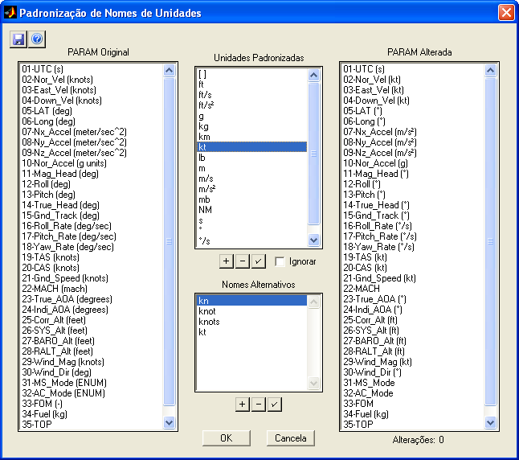
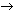
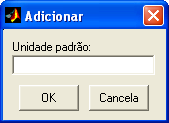
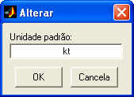
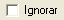
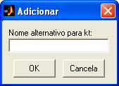
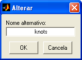

| Menu Ferramentas |
|
Essa ferramenta
permite padronizar
os nomes de unidades que aparecem entre parênteses após o nome dos
parâmetros.
|
Nota: Apenas os nomes
são padronizados, e não as unidades |
Para acessar a
ferramenta, clique
em “Ferramentas ► Padronização de unidades”.

No exemplo acima, todas as ocorrências das unidades “kt”, “kn”, “knot” ou “knots” (sem distinção de maiúsculas ou minúsculas) serão substituídas por “kt”, por exemplo: “CAS (knots)”

“CAS (kt)”.|
Nota: A substituição não diferencia maiúsculas de
minúsculas nos nomes alternativos, apenas no nome padronizado. |
Descrição
A janela de
padronização de unidades possui as
seguintes áreas:
PARAM Original
Apresenta a
matriz PARAM em sua
forma original.
PARAM Alterada
Apresenta a
matriz PARAM com os
nomes das unidades padronizados segundo a lista definida pelo usuário.
Unidades
Padronizadas
Apresenta a
lista de nomes de
unidades padronizados.
Nomes
Alternativos
Apresenta a
lista de nomes de
unidades alternativos a serem substituídos pelo nome padronizado
selecionado.
Alterações
Apresenta o
número de alterações
na configuração atual.
Operação
Para
acrescentar uma unidade padronizada à lista:
- Clique no botão  ;
;
- Digite o nome desejado e confirme..

Para remover
uma unidade padronizada da lista:
- Selecione a unidade que deseja remover;
- Clique no botão  e
confirme. A opção “sem unidade”,
representada por “ [ ] ”, não pode ser removida.
e
confirme. A opção “sem unidade”,
representada por “ [ ] ”, não pode ser removida.
Para alterar
uma unidade padronizada da lista:
- Selecione a unidade que deseja renomear;
- Clique no botão  ;
;
- Altere o nome conforme desejado e confirme. A opção
“sem unidade”, representada por “ [ ] ”, não pode ser
renomeada..

Para
desabilitar a alteração para uma unidade padronizada
- Selecione a unidade padronizada que deseja desabilitar;
- Marque a opção 
- Para habilitar novamente, desmarque a opção..
Para
acrescentar um nome alternativo à lista:
- Selecione o nome padronizado ao qual deseja acrescentar
um nome
alternativo;
- Clique no botão  ;
;
- Digite o nome desejado e confirme..

Para remover um
nome alternativo da lista:
- Selecione o nome padronizado do qual deseja remover um
nome alternativo;
- Selecione o nome alternativo que deseja remover;.
- Clique no botão  e confirme.
e confirme.
Para alterar
uma unidade alternativa da lista:
- Selecione o nome padronizado cujo nome alternativo
deseja renomear;
- Selecione o nome alternativo que deseja renomear;.
- Clique no botão  ;
;
- Altere o nome conforme desejado e confirme..

Para salvar as
alterações feitas à configuração de
alterações (listas de unidades padronizadas e nomes alternativos):
- Clique no botão  e
confirme.
e
confirme.
|
Nota: O programa usa apenas uma configuração de
alterações. Ao salvar a configuração, a anterior será perdida e a nova
passará a ser usada pelo programa. |
Sair
Para confirmar
a operação, clique
no botão “OK” e confirme. A matriz
PARAM será
atualizada.
Para descartar
a operação, clique
no botão “Cancela”.
| |
Inserção de unidades nos parâmetros |
Criar parâmetro a partir de tabela |
|